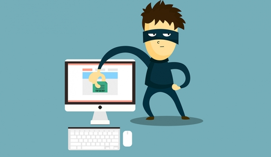
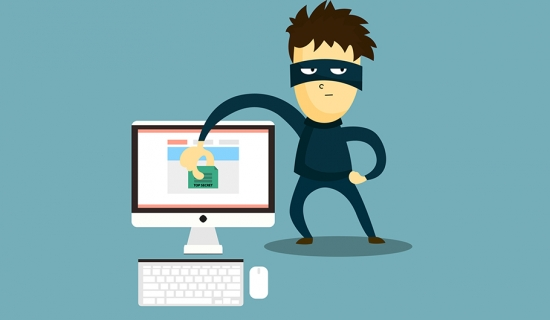

Bienvenue sur ce site dédié au piratage informatique dans le cadre d'un projet de l'ISIMM (LA 1 INFO). Ce site a été créé par Houssem Sakli. |
Le Piratage Informatique |
 |
|
Bienvenue sur ce site dédié au piratage informatique dans le cadre d'un projet de l'ISIMM (LA 1 INFO). Ce site a été créé par Houssem Sakli. |
Le Piratage Informatique |
 |
Un pare-feu (en anglais FireWall) est un système permettant de séparer un réseau interne d'un réseau externe (souvent l'internet).
Il permet de filtrer les communications dans les deux sens et ainsi protéger le réseau interne des éventuelles menaces provenant de
l'extérieur. En effet, pour pénétrer un réseau, un pirate dispose de plusieurs techniques. Mais, la plupart
consiste à envoyer des paquets sur le réseau et exploiter les failles. Le rôle du firewall est de ne laisser passer que les paquets non
suspects; les paquets suspects étant éliminés.
Les pare-feux logiciels permettent aussi d'analyser le comportement des logiciels sur votre ordinateur, et permettent d'empêcher tel programme
d'accéder à internet, ou au contraire d'autoriser tel autre.
Il existe deux solutions de firewall:
Ces solutions dépendent de ce que vous voulez protéger, pour un accès personnel à internet la meilleure solution est de choisir un firewall soft. Vous pouvez opter, par exemple, pour Zone Alarme, ou pour GFI Software.
Un antivirus est un logiciel qui a pour but de détecter et de supprimer les virus d'un système informatique.
Afin de mener à bien sa mission, l'antivirus utilise différentes méthodes:
Un antivirus bien configuré utilise une combinaison de ces méthodes pour protéger un ordinateur des virus.
Lorsque l'antivirus a détecté un virus, il offre trois possibilités à l'utilisateur:
Un Anti-spyware est un logiciel qui permet de rechercher et de supprimer les spywares présents sur un ordinateur.
Un spyware étant toujours actif, l'anti-spyware va comparer l'ensemble des processus actifs du système avec une base de données qu'il faut donc mettre à jour régulièrement.
Il est conseillé d'utiliser plusieurs logiciels anti-spyware, un seul ne détectant pas la totalité des spywares. Voici quelques anti-spywares gratuits:
Hijackthis est un anti-spyware et un anti-hijacker gratuit, reconnu et très efficace, cependant son utilisation comporte un risque
puisque hijackthis scanne le système et renvoie les résultats sous forme d'un log, ce log comporte un certain nombre d'informations vitales de votre système,
et hijackthis vous permet de les supprimer. Une mauvaise utilisation peut donc endommager irrémédiablement votre système !
Il est donc conseillé d'utiliser hijackthis en dernier recours, si toutes les autres méthodes de protections n'ont rien donné. Il faut alors scanner votre système
grâce à hijackthis, puis analyser les résultats pour enfin supprimer les éléments néfastes. Voir ici
pour un tutorial sur l'analyse du log d'hijackthis, voici également un exemple de log. Certains sites, comme celui-ci proposent
également un analyseur du log en ligne. En cas de doute, postez votre log sur les forums de discussions sur ce sujet, il y aura toujours quelqu'un pour vous aider.
Un détecteur d'intrusions (en anglais Instrusive Detection System) est un système capable de détecter une tentative d'intrusion sur votre système. Il stoppe la majeure partie des attaques recensées. Aussi est-il important de le mettre à jour régulièrement. L'IDS écoute le trafic réseau et analyse les paquets pour prévenir des actions suspectes et les arrêter. Les IDS actuels reconnaissent les signaux d'intrusions suivants:
L'IDS est un élément essentiel pour un réseau sécurisé.
Internet est un réseau non sécurisé. Et il est tellement grand, qu'il est inimaginable de le sécuriser. Ainsi, dès que l'on souhaite envoyer des informations confidentielles à une autre personne, il faut crypter le message. Il existe deux grands types de chiffrement:
Pour pouvoir dialoguer sur un réseau, on utilise des protocoles de communication.
Un protocole est une méthode standardisée permettant la communication entre deux processus. Ainsi, si les processus se trouvent sur deux ordinateurs différents et que la méthode n'est pas sécurisée, une personne malintentionnée pourra tout voir en clair. Il est donc important de choisir des protocoles sécurisés.
Tout dépend de la communication que vous voulez entreprendre. Si cette dernière n'est absolument pas confidentielle, autant choisir un protocole non sécurisé, d'autant plus que la rapidité ne sera pas la même.
Lors d'envois d'informations confidentielles, il est impératif de choisir un protocole sécurisé. Le nom des protocoles sécurisés commencent souvent par un "s" comme Secure (sécurisé).
Au protocole d'origine, on a rajouté la couche SSL (Secure Sockets Layers). Cette couche garantit l'identité de la personne avec qui
on parle, et garantit également que les informations seront cryptées entre l'expéditeur et le destinataire. Ainsi, un pirate ne pourra
plus avoir recours au sniffing et au spoofing
.